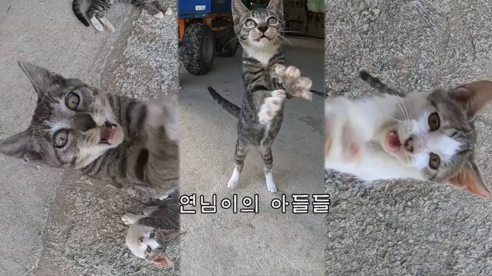

- 3COLORS
- YATONG
- MOO
MOO
무는 연님이의 아들 중 하나로 무심한 듯한 얼굴로 삼색-야통의 구도였던 애교계의 신흥강자로 떠오르고 있다. 그의 형제는 조와 래기(합쳐서 조무래기)가 있다. 조는 첫 발정기 때 양어장을 떠나 자신만의 보금자리를 찾은 듯 하다.

(왼)조/(가운데)래기/(오)무
무는 하얀 바디에 고등어 모자를 쓴 매력적인 털색을 가진 수컷 고양이이다. 새끼고양이 시절부터 한 바구니에서 같이 자며 붙어 다녔던 래기와는 지금까지도 서로 가는 곳에 따라다니는 없어서는 안 될 소중한 형제가 되어버린 것이다.